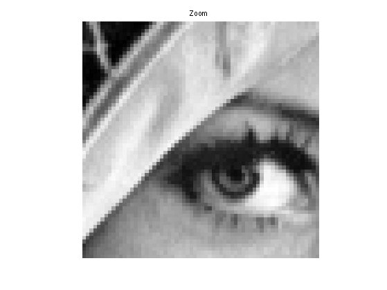
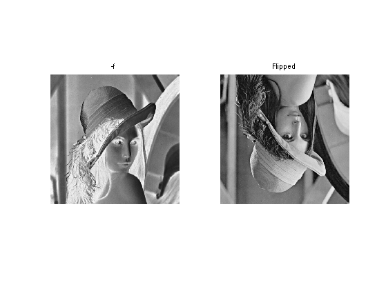
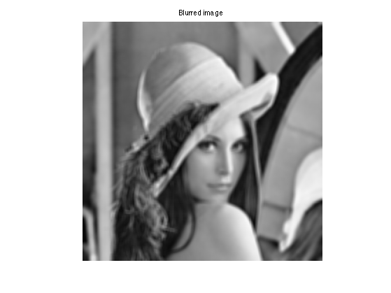
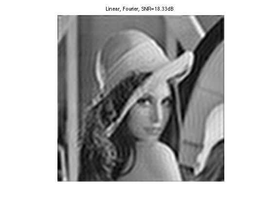
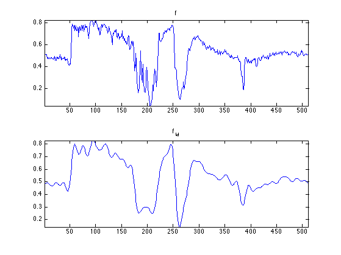
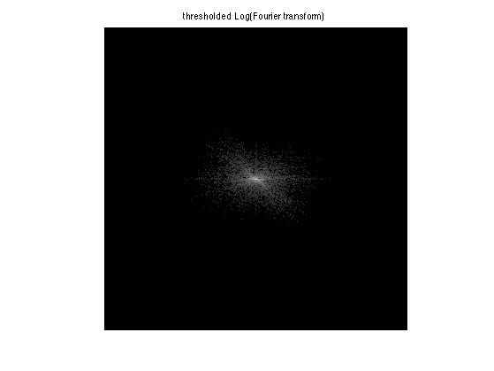
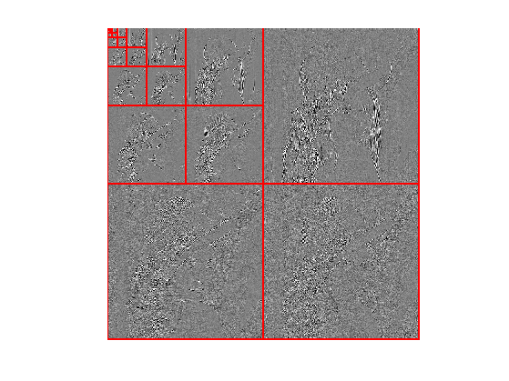
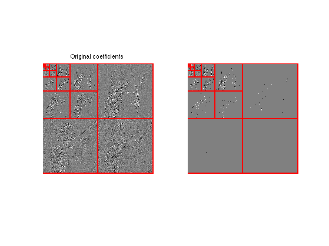
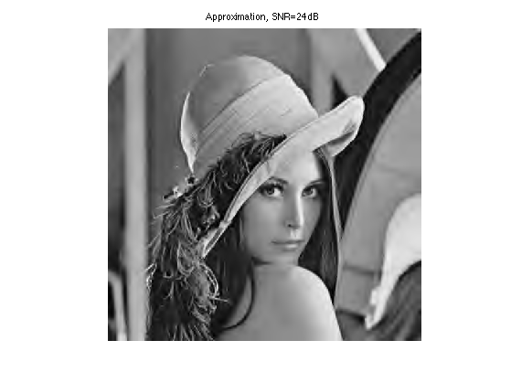

Image Approximation with Fourier and Wavelets
This numerical tour overviews the use of Fourier and wavelets for image approximation.
Contents
Installing toolboxes and setting up the path.
You need to download the following files: signal toolbox and general toolbox.
You need to unzip these toolboxes in your working directory, so that you have toolbox_signal and toolbox_general in your directory.
For Scilab user: you must replace the Matlab comment '%' by its Scilab counterpart '//'.
Recommandation: You should create a text file named for instance numericaltour.sce (in Scilab) or numericaltour.m (in Matlab) to write all the Scilab/Matlab command you want to execute. Then, simply run exec('numericaltour.sce'); (in Scilab) or numericaltour; (in Matlab) to run the commands.
Execute this line only if you are using Matlab.
getd = @(p)path(p,path); % scilab users must *not* execute this
Then you can add the toolboxes to the path.
getd('toolbox_signal/'); getd('toolbox_general/');
Note: to measure the error of an image \(f\) with its approximation \(f_M\), we use the SNR measure, defined as \[ \text{SNR}(f,f_M) = -20\log_{10} \pa{ \frac{ \norm{f-f_M} }{ \norm{f} } }, \] which is a quantity expressed in decibels (dB). The higer the SNR, the better the quality.
Image Loading and Displaying
First we load an image \( f \in \RR^N \) of \( N = N_0 \times N_0 \) pixels.
name = 'lena';
n0 = 512;
f = rescale( load_image(name,n0) );
Display the original image.
clf;
imageplot( f, 'Image f');
Display a zoom in the middle.
clf;
imageplot( crop(f,64), 'Zoom' );
 An image is a 2D array, that can be modified as a matrix.
clf; imageplot(-f, '-f', 1,2,1); imageplot(f(n0:-1:1,:), 'Flipped', 1,2,2);
Blurring is achieved by computing a convolution \(f \star h\) with a kernel \(h\).
Compute the low pass kernel.
k = 9; % size of the kernel h = ones(k,k); h = h/sum(h(:)); % normalize
Compute the convolution \(f \star h\).
fh = perform_convolution(f,h);
Display.
clf;
imageplot(fh, 'Blurred image');
 Fourier Transform
The Fourier orthonormal basis is defined as \[ \psi_m(k) = \frac{1}{\sqrt{N}}e^{\frac{2i\pi}{N_0} \dotp{m}{k} } \] where \(0 \leq k_1,k_2 < N_0\) are position indexes, and \(0 \leq m_1,m_2 < N_0\) are frequency indexes.
The Fourier transform \(\hat f\) is the projection of the image on this Fourier basis \[ \hat f(m) = \dotp{f}{\psi_m}. \]
The Fourier transform is computed in \( O(N \log(N)) \) operation using the FFT algorithm (Fast Fourier Transform). Note the normalization by \(\sqrt{N}=N_0\) to make the transform orthonormal.
F = fft2(f) / n0;
We check this conservation of the energy.
disp(strcat(['Energy of Image: ' num2str(norm(f(:)))])); disp(strcat(['Energy of Fourier: ' num2str(norm(F(:)))]));
Energy of Image: 255.9831 Energy of Fourier: 255.9831
Compute the logarithm of the Fourier magnitude \( \log(\abs{\hat f(m)} + \epsilon) \), for some small \(\epsilon\).
L = fftshift(log( abs(F)+1e-1 ));
Display. Note that we use the function fftshift is useful to put the 0 low frequency in the middle.
clf;
imageplot(L, 'Log(Fourier transform)');
Linear Fourier Approximation
An approximation is obtained by retaining a certain set of index \(I_M\) \[ f_M = \sum_{ m \in I_M } \dotp{f}{\psi_m} \psi_m. \]
Linear approximation is obtained by retaining a fixed set \(I_M\) of \(M = \abs{I_M}\) coefficients. The important point is that \(I_M\) does not depend on the image \(f\) to be approximated.
For the Fourier transform, a low pass linear approximation is obtained by keeping only the frequencies within a square. \[ I_M = \enscond{m=(m_1,m_2)}{ -q/2 \leq m_1,m_2 < q/2 } \] where \( q = \sqrt{M} \).
This can be achieved by computing the Fourier transform, setting to zero the \(N-M\) coefficients outside the square \(I_M\) and then inverting the Fourier transform.
Number \(M\) of kept coefficients.
M = n0^2/64;
Exercice 1: (check the solution) Perform the linear Fourier approximation with \(M\) coefficients. Store the result in the variable fM.
exo1;
Compare two 1D profile (lines of the image). This shows the strong ringing artifact of the linea approximation.
clf; subplot(2,1,1); plot(f(:,n0/2)); axis('tight'); title('f'); subplot(2,1,2); plot(fM(:,n0/2)); axis('tight'); title('f_M');
Non-linear Fourier Approximation
Non-linear approximation is obtained by keeping the \(M\) largest coefficients. This is equivalently computed using a thresholding of the coefficients \[ I_M = \enscond{m}{ \abs{\dotp{f}{\psi_m}}>T }. \]
Set a threshold \(T>0\).
T = .2;
Compute the Fourier transform.
F = fft2(f) / n0;
Do the hard thresholding.
FT = F .* (abs(F)>T);
Display. Note that we use the function fftshift is useful to put the 0 low frequency in the middle.
clf;
L = fftshift(log( abs(FT)+1e-1 ));
imageplot(L, 'thresholded Log(Fourier transform)');
 Inverse Fourier transform to obtained \(f_M\)
fM = real( ifft2(FT)*n0 );
Display.
clf; imageplot(clamp(fM), ['Non-linear, Fourier, SNR=' num2str(snr(f,fM), 4) 'dB']);
Given a \(T\), the number of coefficients is obtained by counting the non thresholded coefficients \( \abs{I_M} \).
m = sum(FT(:)~=0); disp(['M/N = 1/' num2str(round(n0^2/m)) '.']);
M/N = 1/32.
Exercice 2: (check the solution) Compute the value of the threshold \(T\) so that the number of coefficients is \(M\). Display the corresponding approximation \(f_M\).
exo2;

Wavelet Transform
A wavelet basis \( \Bb = \{ \psi_m \}_m \) is obtained over the continuous domain by translating an dilating three mother wavelet functions \( \{\psi^V,\psi^H,\psi^D\} \).
Each wavelet atom is defined as \[ \psi_m(x) = \psi_{j,n}^k(x) = \frac{1}{2^j}\psi^k\pa{ \frac{x-2^j n}{2^j} }. \] The scale (size of the support) is \(2^j\) and the position is \(2^j(n_1,n_2)\). The index is \( m=(k,j,n) \) for \{ j \leq 0 \}.
The wavelet transform computes all the inner products \( \{ \dotp{f}{\psi_{j,n}^k} \}_{k,j,n} \).
Set the minimum scale for the transform to be 0.
Jmin = 0;
Perform the wavelet transform, fw stores all the wavelet coefficients.
fw = perform_wavelet_transf(f,Jmin,+1);
Display the transformed coefficients.
clf; plot_wavelet(fw);
Wavelet Approximation
Linear wavelet approximation with \(M=2^{-j_0}\) coefficients is obtained by keeping only the coarse scale (large support) wavelets: \[ I_M = \enscond{(k,j,n)}{ j \geq j_0 }. \]
It corresponds to setting to zero all the coefficients excepted those that are on the upper left corner of fw.
Exercice 3: (check the solution) Perform linear approximation with \(M\) wavelet coefficients.
exo3;
A non-linear approximation is obtained by keeping the \(M\) largest wavelet coefficients.
As already said, this is equivalently computed by a non-linear hard thresholding.
Select a threshold.
T = .2;
Perform hard thresholding.
fwT = fw .* (abs(fw)>T);
Display the thresholded coefficients.
clf;
subplot(1,2,1);
plot_wavelet(fw);
title('Original coefficients');
subplot(1,2,2);
plot_wavelet(fwT);
 Perform reconstruction.
fM = perform_wavelet_transf(fwT,Jmin,-1);
Display approximation.
clf; imageplot(clamp(fM), strcat(['Approximation, SNR=' num2str(snr(f,fM),3) 'dB']));
Exercice 4: (check the solution) Perform non-linear approximation with \(M\) wavelet coefficients by chosing the correct value for \(T\). Store the result in the variable fM.
exo4;
Compare two 1D profile (lines of the image). Note how the ringing artifacts are reduced with respec to the Fourier approximation.
clf; subplot(2,1,1); plot(f(:,n0/2)); axis('tight'); title('f'); subplot(2,1,2); plot(fM(:,n0/2)); axis('tight'); title('f_M');